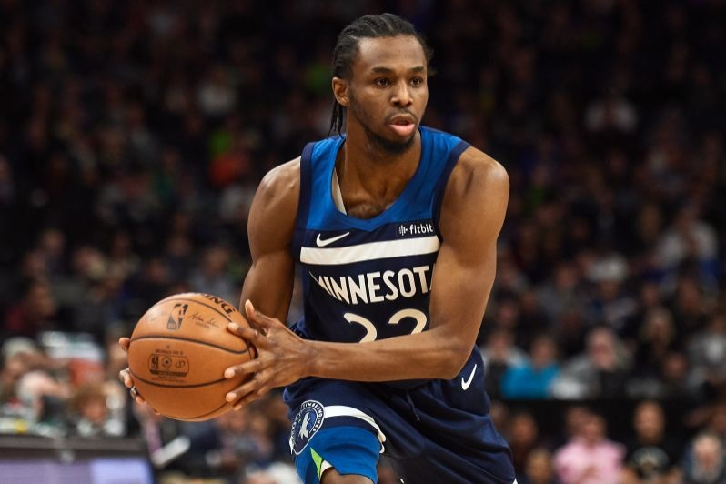
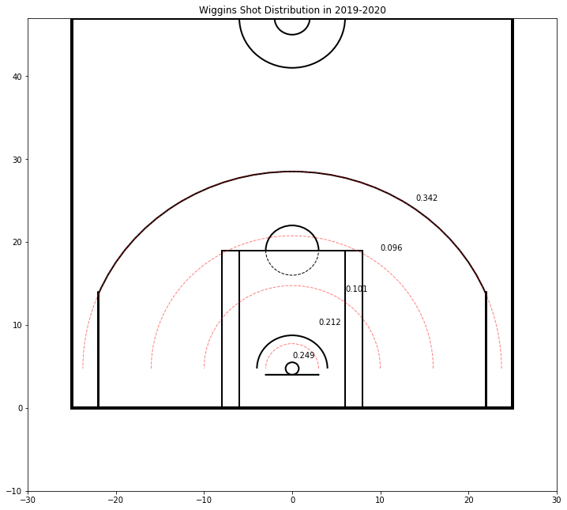
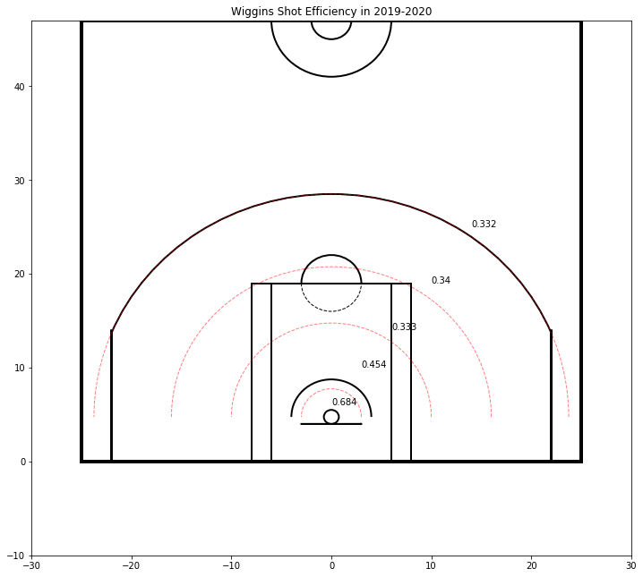
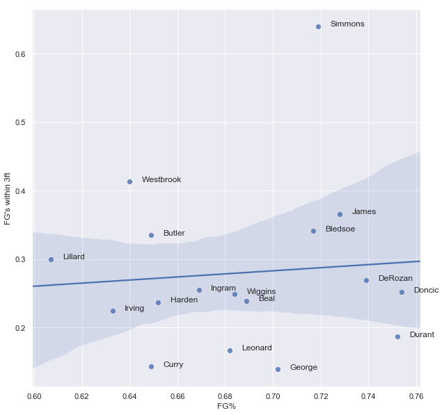
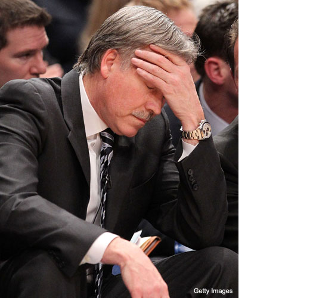

Andrew Wiggins: The First Maple Jordan
What better way to introduce this website to the world than with an article about the man called Maple Jordan himself? Born in 1995, Andrew Christian Wiggins was born to Mitchel Wiggins, a former NBA player and Marita Payne, a former Olympian. He was born in Thorn Hill, a city north of Toronto. In the 2014 NBA draft, Wiggins was selected as the number one pick by the Cleveland Cavaliers. Wiggins however would not play a single game for the Cavaliers as he would be trade by Lebron David Griffin, the Cavalier GM at the time to the Minnesota Timberwolves for Love alongside a first round pick. Since then Wiggins has had a number of controversy involving his complete level, lack of winning and his status as a first overall pick.
Coming out of high school, Andrew receieved a lot of hype and was dubbed "Maple Jordan". The hype died down a bit after his college year but given his athletic abilities many people still had high expectations for him. This brings us to the current Wiggins. With six seasons under his belt, Andrew is no longer an up and coming talent. This is the time when players are expected to make an impact for their team. Just how has Andrew lived up to these expectations?
The Situation
Since winning rookie of the year, Wiggins has been heavily criticized for his lack of improvement on efficiency, shooting, defence, playmaking and rebounding. Indeed some of these critisims are valid such as rebounding which has seen almost no improvements throughout his career. However that is not true as Wiggins has grown to become quite a good player. At certain things. Below we will examine some of his strengths compared to other known star players in the league.
figure 1: Wiggins shot distribution from 0 - 3, 3 - 10, 10 - 16, 16 - 3pt, and 3pt plus feet from basket
figure 2: Wiggins efficency from 0 - 3, 3 - 10, 10 - 16, 16 - 3pt, and 3pt plus feet from basket
The charts above shows values for the ranges 0 - 3, 3 - 10, 10 - 16, 16 - 3pt, and 3pt plus range in feet from the center of the basket. Looking at the figure 2 we see that Wiggins is good finisher at the rim. How good? Well take a look at the chart below.
With a finishing percentage of 68% within 68%, this puts Wiggins in the same catagory as many other star players(non-bigs) at this range. Wiggins is good enough at this range, that he surpasses some well known finishers in both attempts and efficiency such as Irving, Harden, and Leonard. Of course this does not account for free throw and types of shot (isolation, putbacks, etc) but it does give you an idea of how effective Wiggins is up close.
...And the Not so Good Stuff
Despite Wiggins abilities at the rim, he suffers from one major weakness. His midrange. It cannot be overstated how bad his midrange is. It makes up around 40% of his shots, but he hits them with the same percentage as his three pointer. From figure 1, his effiency from 10 - 16 and 16 - 3pt are an abyssmal below 35%! The number of attempts plus his awful finishing at this range sets him back immensely.
This is the kind of playstyle that would give Mike D'Antoni a stroke

The future
Playing with a healthy Warriors team will almost guarantee improvements to Wiggins overall play. How much? Well I would expect a fair amount. Players that play alongside Curry tend to experience a hefty boast in efficiency. I expect the same to happen to Wiggins. His overall attempts may go down, but he will end up contributing to the team in a more positive manner. At this point in his career it is unlikely that Wiggins will quite live up to his draft expectations and his and his sites name, but he will still probably be a solid borderline star to potential star player for years to come.